The Membership List
Three organizations. Each publishes its own membership. Each has members who appear in every war you’ve scrolled through. Together they form the connective tissue of the 20th and 21st centuries — the nexus where intelligence, finance, defense, media, and policy meet in the same room, behind the same closed doors, and call it public service.
The Council on Foreign Relations

The CFR isn’t a conspiracy. It’s a membership organization that publishes the journal Foreign Affairs, hosts policy discussions, and places its members in government. The conspiracy is that a single private organization has supplied a significant fraction of every presidential Cabinet since Eisenhower — and almost nobody knows it exists.
CFR → CIA Director Pipeline
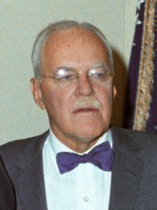
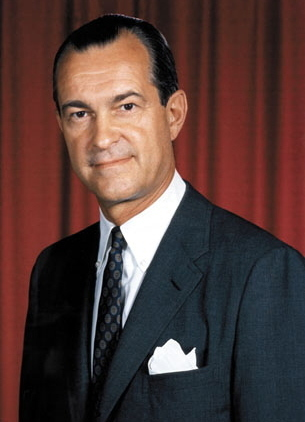
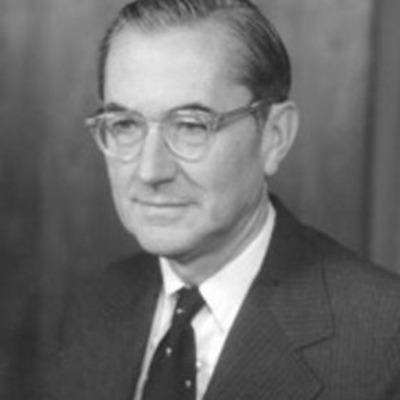
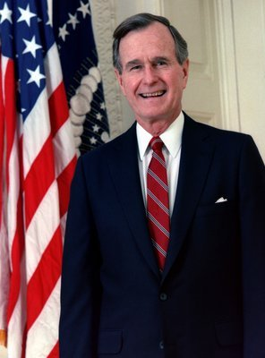
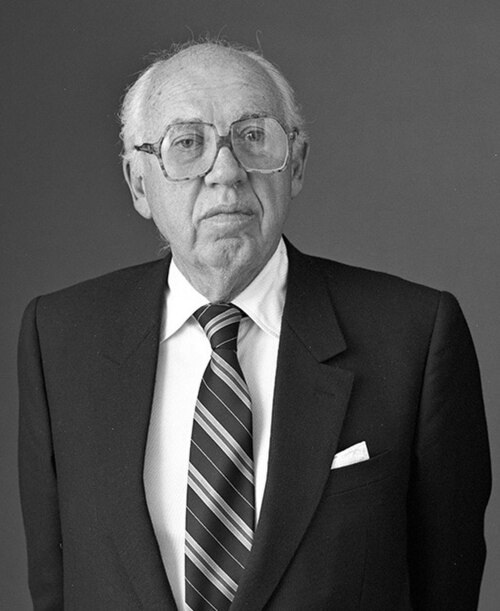
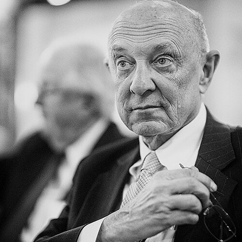
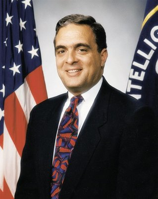
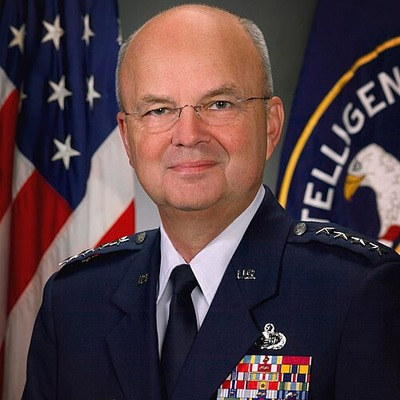
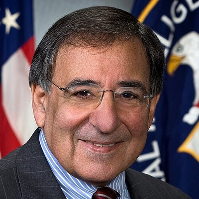
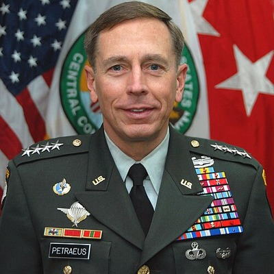
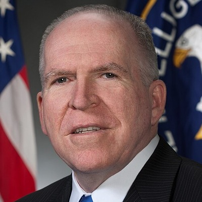
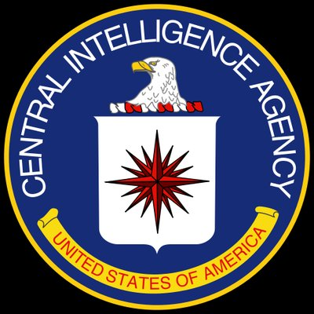
One membership list. One private organization. Seven decades of CIA directors. This isn’t inference. It’s their own roster.
The Trilateral Commission

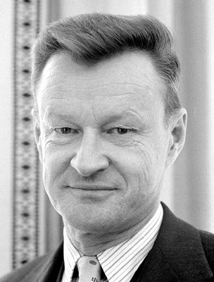
An organization that published a report calling democracy a problem placed 19 members in the next presidential administration. The report wasn’t classified. The membership wasn’t secret. The administration happened anyway.
The Bilderberg Group
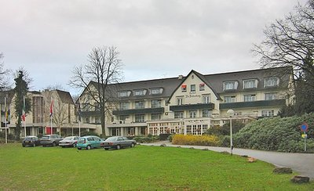
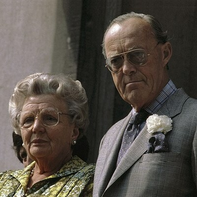
IG Farben built the factories at Auschwitz. IG Farben manufactured Zyklon B. After the war, IG Farben was broken up into Bayer, BASF, and Hoechst — the same companies that appear in Body Wars. The man who worked for IG Farben before the war founded the most exclusive policy forum on Earth after it. You scrolled through this connection in Scroll 007. Now you see where the founder sits.
The Overlap


When the same 87 people sit on the membership rolls of the three organizations that shape Western foreign, economic, and defense policy — that’s not a coincidence. That’s a org chart.